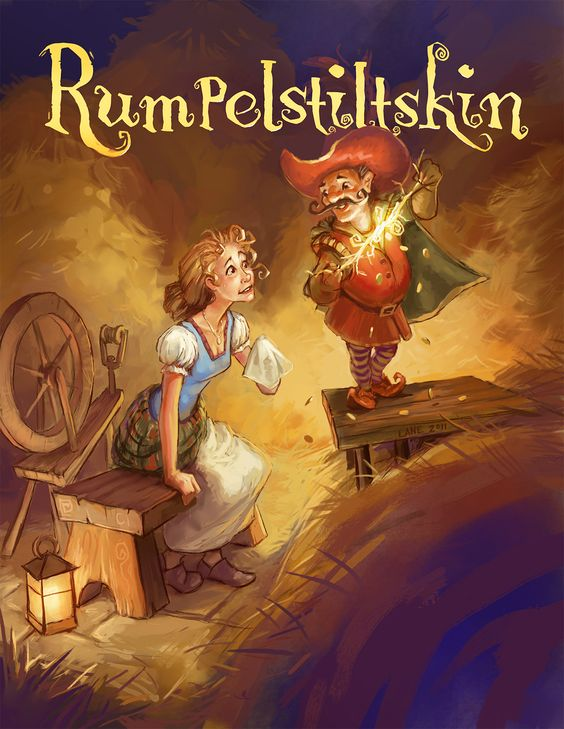

Rumpelstiltskin
Once upon a time, there was a poor miller who had a beautiful daughter. One day, in an attempt to impress the king, he bragged that his daughter could spin straw into gold. The king, intrigued by the idea, summoned the girl to his palace. He locked her in a room filled with straw and commanded her to spin it into gold by morning, or she would be executed.
The poor girl, knowing she could not spin straw into gold, began to weep. Suddenly, a strange little man appeared and offered to help her in exchange for her necklace. Desperate, she agreed, and the little man spun all the straw into gold by morning. When the king saw the gold, he was pleased but greedy. He moved her to a larger room filled with more straw and demanded she spin it into gold again.
Once more, the little man appeared. This time, she gave him her ring in exchange for his help. The next morning, the king was even more impressed but still not satisfied. He locked her in an even larger room filled with straw and promised to marry her if she could spin it all into gold. If she failed, she would be executed. The little man appeared again, but the girl had nothing left to give.
"Promise me your firstborn child," the little man demanded. Desperate to live and become queen, she agreed. The little man spun the straw into gold, and the king kept his promise. They were married, and in time, the queen gave birth to a beautiful child. She had forgotten her promise to the little man until he appeared one day to claim his prize.
The queen was heartbroken and begged to keep her child. The little man, moved by her tears, gave her a chance. "If you can guess my name within three days, you can keep your child," he said. The queen sent messengers across the kingdom to collect every unusual name they could find. On the first day, she guessed many names, but each was wrong. On the second day, she guessed more names, but still no success.
On the third day, one of her messengers reported seeing a strange little man dancing around a fire and singing, "Today I bake, tomorrow I brew, the next day I'll have the queen's child. Ha! Glad am I that no one knew that Rumpelstiltskin I am called!" The queen was overjoyed and, when the little man returned, she asked, "Is your name Rumpelstiltskin?"
The little man was furious and stomped his foot so hard that he fell through the floor and disappeared forever. The queen and her child were safe, and they lived happily ever after, never forgetting the lesson learned from the strange little man named Rumpelstiltskin.